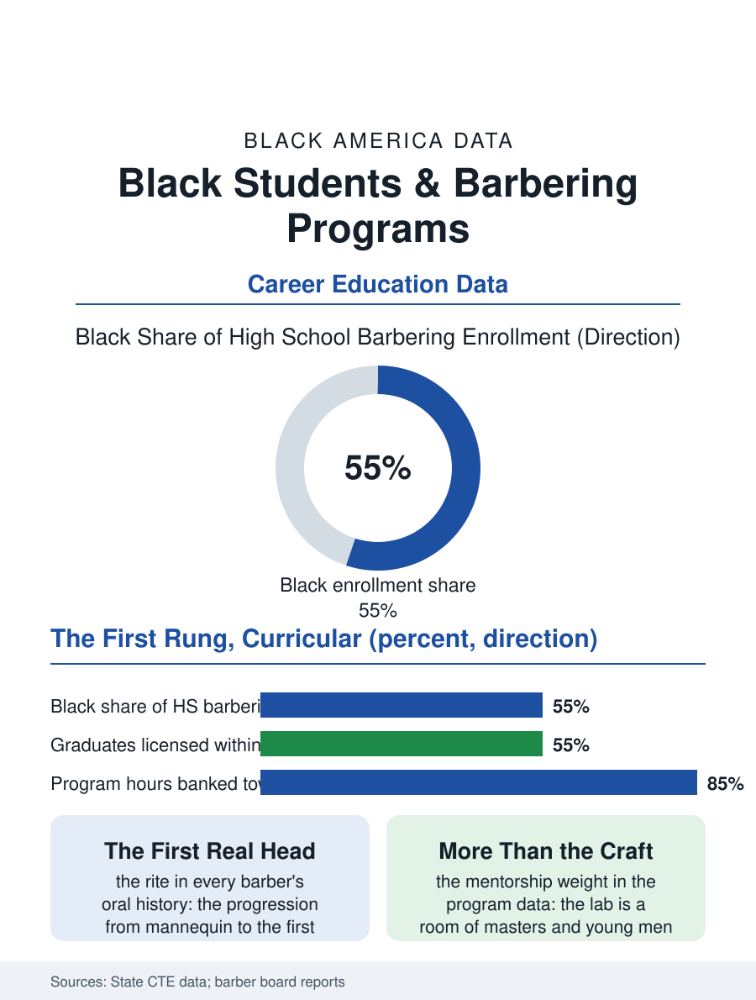

Black Education
The First Real Head: Black Students and Barbering Programs
The first real head under the master's eye, the institution reproducing itself under the license's discipline. The barbering file.

The high school barbering program is the chair file's first rung made curricular: the state board's hours accumulated in the school lab's chairs, the neighborhood's gentlemen served at the school's prices, in a program whose enrollment in the urban districts is the CTE file's most culturally continuous. This article reads the barbering program file.
The Lab's Chairs
The structure mirrors the cosmetology file's with the barber board's own hours and examinations: the lab as the working shop, the public's appointments as the practicum, the instructor a master barber teaching against the chair's rent he could be collecting in the pattern of the trade instructors'. The student's progression runs from the mannequin to the first live cut under the master's eye, the program's rite of passage recorded in every barber's oral history regardless of the school that taught him, the tremor of the first real head being the craft's true enrollment. The curriculum's science, the sanitation and the skin and the hair's chemistry, is taught at the board's standard, with the business file, the shop's arithmetic of rent and book, being the program's frontier as in the cosmetology lab's. The shop's economics are taught in the lab's own operation in the strong programs, the students rotating through the desk and the book and the inventory as the cosmetology lab's do, so that the completer has kept the appointment book he will one day rent a chair inside, an experience whose absence in the weaker programs the business file's failure data price. The clipper's maintenance, the blade's alignment and the tool's sanitation as a craft ritual, is the program's small liturgy, performed at the day's open and close in the pattern the masters insist is the shop's character in miniature.
The License and the Culture
The licensure's pass rates follow the examination file's pattern, the written's reading load against the practical's craft, with the school program's completers dividing at the board as the cosmetology file's do, the program's value to the nearly-licensed being the hours' bankability toward the apprenticeship routes the boards allow. The program's cultural position exceeds its enrollment's size in the file's judgment, because the barbering lab is the school's one room where the culture's own institution is the curriculum entire, the shop's talk and the craft's standards and the clientele's trust all native to the students' home ground, in the pattern of the cosmetology lab's reversal, with the young men's version carrying its own mentorship weight in the buildings where the male teacher file is thinnest. The instructor's chair at the lab's head is occupied by the master whose own book, built over the decades the students can see in the clientele who still ask for him by name at the school's clinic, is the program's living syllabus of what the trade, practiced at its standard for a lifetime, actually returns.
The First Real Head
The barbering file closes on the program's product in the community's terms, because its graduates staff and then own the chairs of the workforce file, and the school's lab is where the institution reproduces itself under the license's discipline rather than the street's informality alone, a formalization the barbering tradition, older than the license itself, has made its peace with on the evidence of the chairs filled each June. The boards count the school programs' licenses with the rest. The file's last entry is the clinic's Saturday in the school lab, the neighborhood's elders in the students' chairs and the master moving down the row with the eye the students will spend their careers trying to satisfy, the cut and the conversation both proceeding at the institution's ancient standard, inside a high school that has had the sense to make a curriculum of it. The master's chair in the lab is never sat in by the students, a rule no one explains and everyone understands by the second week. The clientele's loyalty to the master, visible to the students in the clinic's book, teaches the trade's central economics before any lecture on the rent. The book the master kept for thirty years is the program's endowment, drawn on daily and never diminished. The record holds in the students' hands.
More in Black Education
Black Educational Attainment: High School Parity, the College Gap
About 89 percent of Black adults hold a high school diploma and one in four holds a bachelor's degree or higher — the attainment ladder, the college completion gap, and the generational trend.
Historically Black Colleges and Universities: Enrollment and Degrees
More than 100 HBCUs enroll roughly 290,000 students and award about one in six Black bachelor's degrees — an outsized share from a small sector. The federal education data.
Black College Enrollment: 2.4 Million Students
About 2.4 million Black students are enrolled in American colleges — nearly two-thirds of them women. The NCES enrollment data by sector, level, and trend.
Source: State career and technical education data; state barber board school program reports.